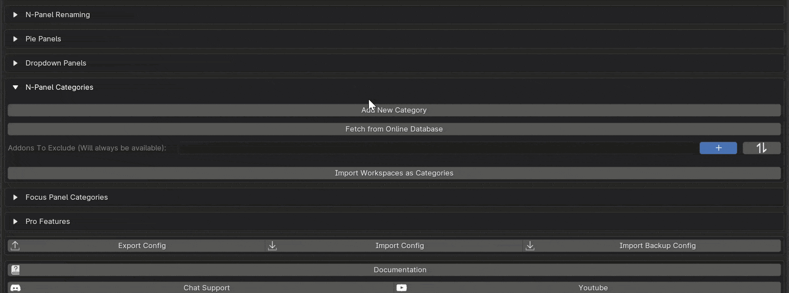
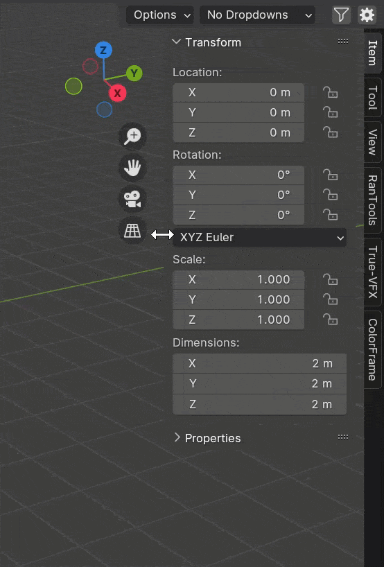
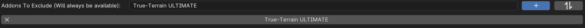

N-Panel Filtering
N-Panel filtering empowers you to manage the visibility of N-Panel tabs through categorized sets.
Creating Categories
In the N-Panel Filtering tab of the addon preferences, you can organize your addons into categories or sets.
To create a category:
Click the “Add New Category” button.
Enter a name and click OK.
Optionally, select an icon.
Choose the addons you want to be visible when this category is enabled.

Using Filtering
Once you have set up your categories, you’ll find them at the top of your Viewport (on the right or left, depending on your addon preferences).
To begin filtering, activate the filter icon. Upon enabling it, you’ll see icons representing the categories you created earlier.
Click any of these icons to enable them. Addons associated with the enabled categories will be displayed in the N-Panel, while others will be hidden.
Tip
You can enable multiple categories by holding down shift.

Excluding Addons
For addons that you want to be available in all categories, you can exclude them from filtering by adding them to the “Addons To Exclude” list.
